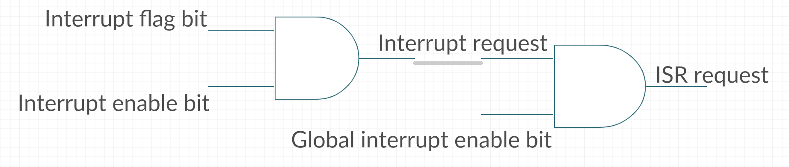
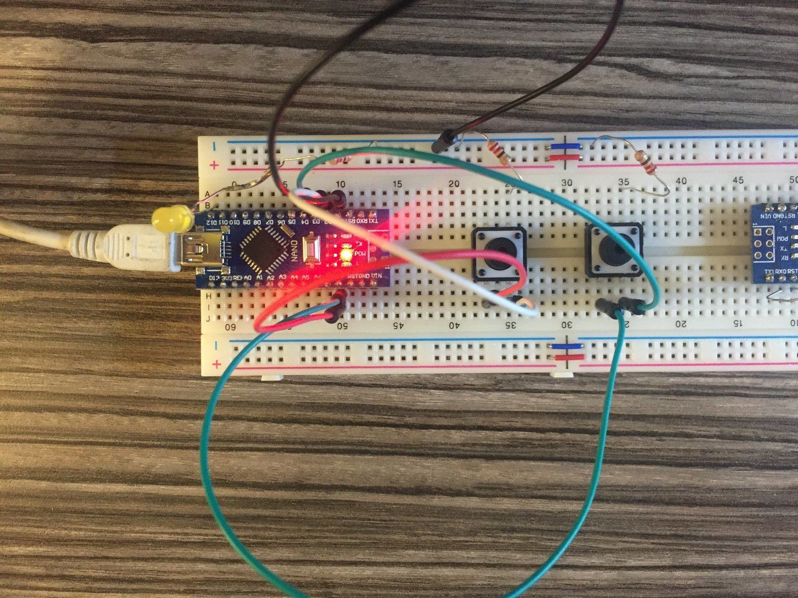

Interrupt concepts
Microcontroller's interrupts are usually hardware interrupts. The interrupt sources include external voltage change, timer/counter, peripheral ready, and reset. The interrupt system allows to use an event-driven programming style.
Enable/Disable
To enable any interrupt, the global interrupt bit, SREG.I, must be set (SREG |= 0x80). It can only be set by software.
- The SEI instruction is dedicated to enable the globle interrupt. #include<avr/interrupt.h> sei(); in C.
- The RETI instruction is a return instruction that is used to return from interrupt routine, it can also re-enable the interrupt.
Disabling the interrupt would be done by hardware automatically, or can be achieved by software.
- Software: CLI instruction is used to clear the global interrupt bit. #include<avr/interrupt.h> cli(); in C.
- Hardware: this bit is automatically cleared when entering an interrupt routine. Then enabling this bit in an interrupt routine may result in the nested interrupt.
Interrupt working flow:
- when an interrupt event happens, it sets the Interrupt Flag Bit of the device specific status register.
- Check if the Interrupt Enabled bit is also set.
- It may generate the Interrupt Request, and do AND with the global interrupt bit.

* The ISR request is wired to the pre-defined interrupt vector, so software cannot modify it.
- CPU check if an interrupt occurs in the end of every CPU cycle. If yes, it implements a series of instructions and jmp to the ISR immediately after the execution of the
current instruction. The trap process takes at least 4 clock cycle, push PC, disable interrupt, jmp to the interrupt vector, jmp to the interrupt service routine. If the current executed instruction
is a multi-cycle instruction, the trap takes more time.
* The switching to interrupt routine does not save the status register, developers may store and recover it inside the ISR's begining and ending.
Interrupt types
- Trigger by events: This type of interrupt is stateful, which means the interrupt occuring is remembered by the system. Even if the interrupt event disappeared when the CPU checks it, the ISR still can be triggered. The event is record in the interrupt flag bit. (e.g. External interrupt's logic change event). Writing 1 to flag bit actually clears this bit not set.
- Trigger by interrupt conditions: This type of interrupt is stateless, which means the ISR would not be executed if the interrupt event disappeared when CPU check it. (e.g. External interrupt's low level event)
- Software interrupt: External interrupt can be triggered by software when modifying the port's value. This also triggers the interrupt routine.
Terms
- Interrupt vector: An interrupt vector stores an address that points to the interrupt service routine.
- Interrupt vector table: A table that stores interrupt vectors.
- Interrupt service routine: A function that is executed when the corresponding interrupt happens.
Interrupt in Atmega328p
Atmega328p has 26 interrupt vectors. They are stored in either boot space or the application space. Both spaces are located in the 32Kbytes flash memory. The size of boot section and application section is adjustable by changing the BOOTSZ fuse bits. The boot section occupies the high address space, and the application section occupies the low address space. The interrupt vectors can be placed in either sections by modifying the MCU Control Register MCUCR.IVSEL and MCUCR.IVCE. To avoid unintentionally changing the interrupt vectors, special write sequence is required.
Change interrupt vectors location
- Write the Interrupt Vector Change Enable (IVCE) bit to 1. MCUCR |= 0x01
- Within 4 cycles, write the desired value of IVSEL while writing a zero to IVCE. MCUCR |= 0b000000y0 (y=0 in the beginning of application section, =1 in the beginning of boot loader section)
* Interrupts is automatically disabled during this process and re-enable after changing the two bits. The disabling does not affect the global interrupt enable bit.
Reset and interrupt priorities: the prority is determined by the interrupt vector's address. A lower address interrupt has higher prority, which means the lower address interrupt routine would be executed when two or more interrupt happened at the same time. Because Reset always has the lowest address, it always has the highest priority. Becuase the flash memory is 32KB, the address space is 15 bits long. Therefore, each address is 2 bytes. Then each interrupt vector would occupy 2 bytes or 1 word.
| Vector No | Vector Address | Source | Meaning |
|---|---|---|---|
| 1 | 0x0000 | Reset | 4 reset source: external pin, power-on, watchdog and BOD |
| 2 | 0x0002 | ||
| 7 | 0x000C | WDT | Watchdog time-out interrupt |
* The vector address should be added an offset, the boot section start address, if the interrupt vectors is placed in boot section.
Experiments
-
Nested interrupt
Design: Configure the external INT0 (PD2) and INT1 (PD3) as rising edge triggering. The routine of INT0 blinks the on-board LED for 30 times. Initial frequency is 6s. The routine of INT1 decrement the blinking duration by 1 and blinks the same led at a high speed for once.
#define F_CPU 16000000UL #include <avr/interrupt.h> #include <util/delay.h> #include <avr/io.h> void delay_ms(int time){ int i =0 ; for(; i < time; i++){ _delay_ms(1); } } volatile int time = 2000; void on_board_led(const int time){ PORTB |= 0x10; delay_ms(time); PORTB &= ~0x10; delay_ms(time); } ISR(INT0_vect, ISR_NOBLOCK){ int i = 0; for(; i < 100; i++){ on_board_led(time); EIFR |= 0x01; } } ISR(INT1_vect){ on_board_led(50); on_board_led(50); EIFR |= 0x02; time = time >> 1; if(time < 50){ time = 2000; } } int main(){ DDRB |= 0x10; DDRD &= ~0x0C; // INT0/INT1 pins PD2/3 output EICRA |= 0x0f; // INT0 rising edge EIMSK |= 0x03; // enable INT0 interrupt sei(); // enable global interrupt _delay_ms(1000); // delay 1000ms while(1); }Connection
